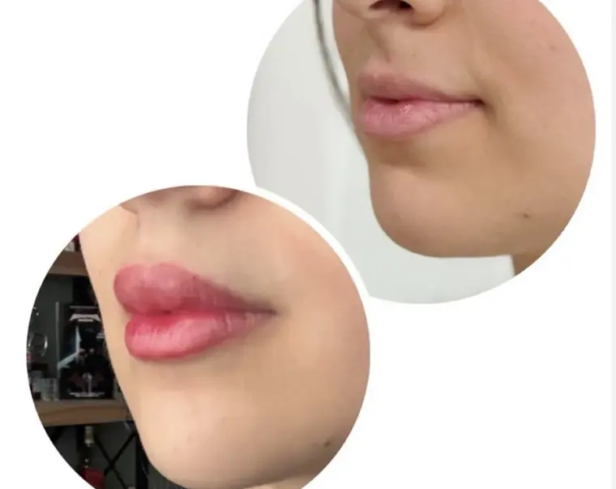
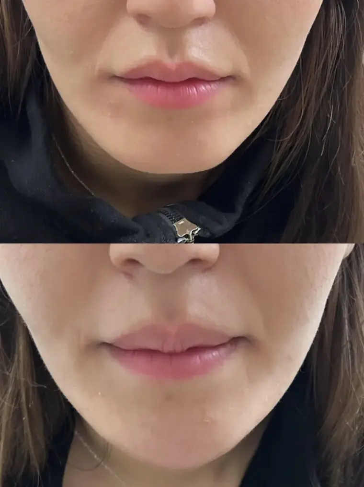
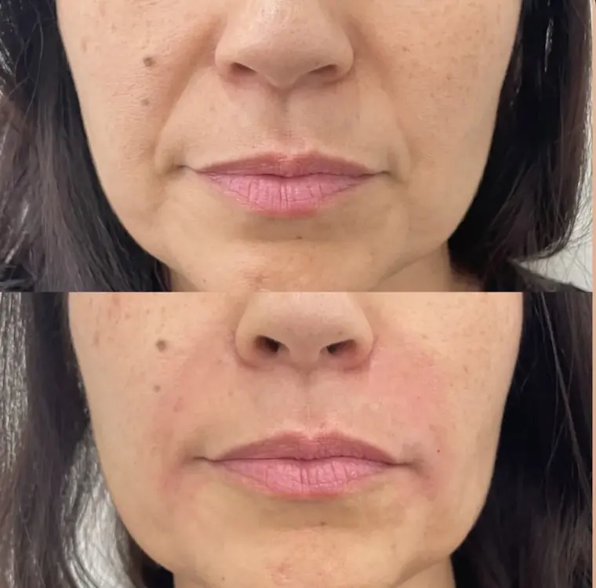
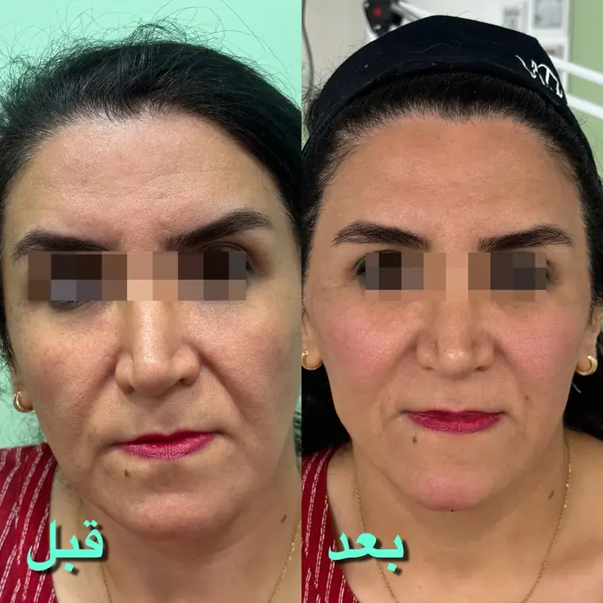

نواحی تزریق فیلر
- لب
- چانه
- گونه
- شقیقه
- بینی
- زیر چشم
- کانتورینگ صورت
- خط لبخند
- فیلر بدن و هیپ دیپ
فیلر لب با مدلهای مختلف
مدلهای مختلف تزریق لب مثل نچرال، روسی، قلبی، M شکل و عروسکی با مشاورهی تخصصی پزشک و متناسب با فرم صورت شما انجام میشود. اصلاح فرم لب و قرینهسازی هم از تخصصهای تیم کلینیک است.
فیلر چانه و کانتورینگ
برای اصلاح فرم چانه و کانتورینگ صورت، میزان فیلر پس از بررسی صورت و گفتگو با شما مشخص میشود. نمونههایی از نتیجهی کار را در بخش قبل و بعد ببینید.
مواد و پشتیبانی
فیلرها اورجینال و از برندهای اروپایی و کرهای هستند. برای مراجعین فرتاک، ترمیم تا دو هفته پس از تزریق رایگان است.
نمونهکار و تصاویر




مشاهدهی همهی نمونههای قبل و بعد این خدمت
مقالات مرتبط
- فیلر چیست و چقدر ایمن است؟ راهنمای انتخاب فیلر لب، چانه و گونه و عوارض احتمالی
- چطور یک کلینیک زیبایی مطمئن در سعادتآباد تهران انتخاب کنیم؟ چکلیست ۱۰ مرحلهای
سوالات متداول
فیلر در فرتاک برای چه نواحیای انجام میشود؟
لب، چانه، گونه، شقیقه، بینی، زیر چشم، خط لبخند و کانتورینگ صورت و همچنین فیلر بدن و هیپ دیپ.
از چه فیلری استفاده میشود؟
از فیلرهای اورجینال اروپایی و کرهای استفاده میشود. نوع مناسب در مشاوره انتخاب میشود.
هزینهی فیلر چقدر است؟
هزینه به نوع و میزان فیلر و ناحیهی تزریق بستگی دارد. برای اطلاع از هزینه با کلینیک تماس بگیرید.
آیا ترمیم فیلر رایگان است؟
بله، ترمیم تا دو هفته پس از تزریق رایگان است.
نتیجهی هر درمان بسته به شرایط پوست و بدن هر فرد متفاوت است. این صفحه برای اطلاعرسانی است و جایگزین مشاورهی تخصصی نیست؛ تصمیم نهایی دربارهی درمان مناسب پس از بررسی و مشاوره انجام میشود.